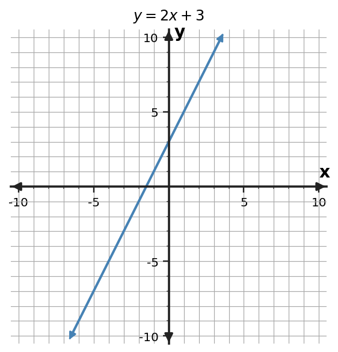

Mystery
Three views agree. Which graph is the fourth view?
Do not guess by appearance. Decide what evidence would have to agree.
Clues
Record the evidence
A table with (0,3), (1,5), (2,7), (4,11), the rule y=2x+3, and a taxi context with a \$3 start fee plus \$2 per mile.
Record the table and rule; you will need them after the graph choices disappear.
Commit
Choose and defend
Make one choice. Be ready to name two pieces of evidence that support it.
Reveal
Compare your evidence

Graph y=2x+3 and verify the intercept and two ordered pairs.
Discussion
What carries forward?
1. What evidence rules out a graph fastest?
2. Why is matching by shape alone unsafe?
3. Which representation makes the starting value easiest to see?
Today we will move deliberately among graph, equation, table, and context.